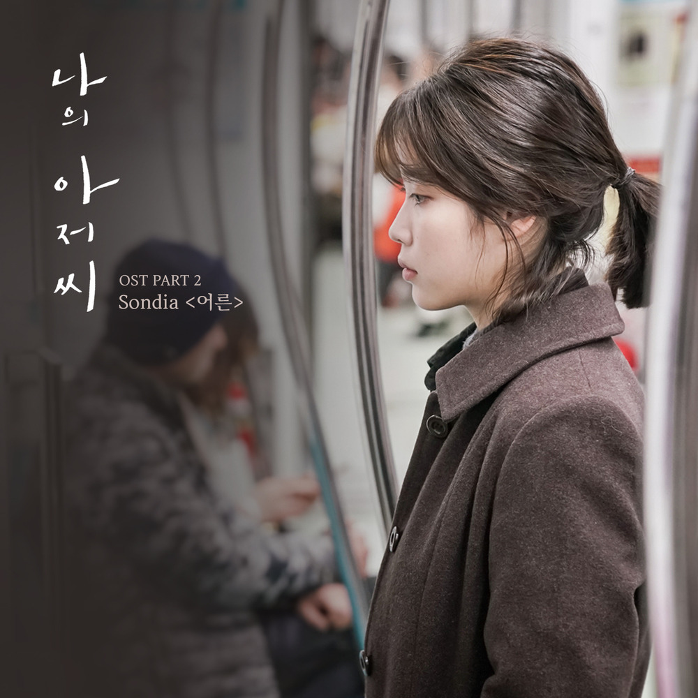
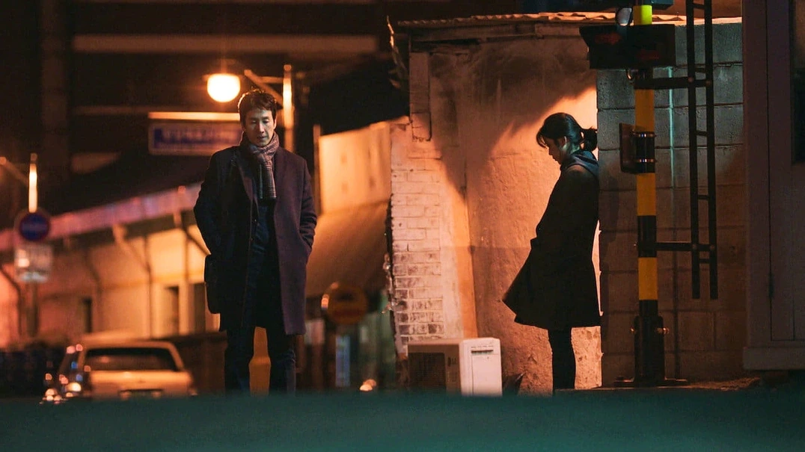
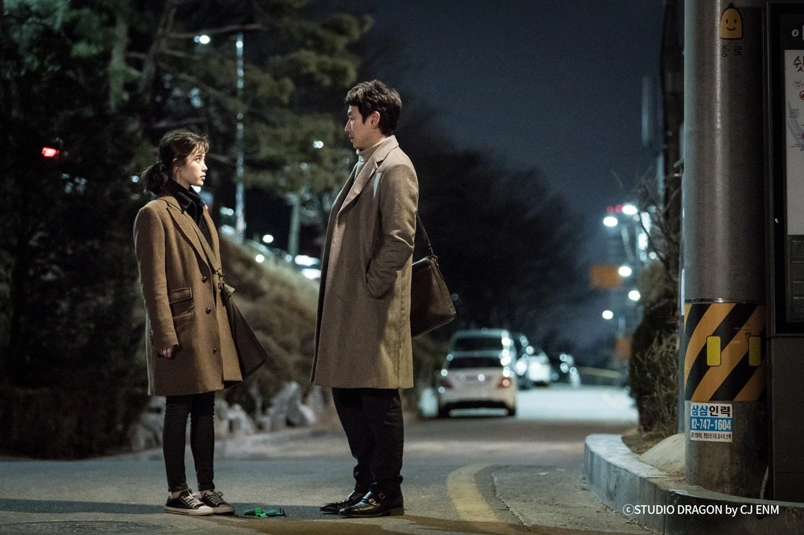

안녕하세요 라보엠입니다.
12월 27일은 영원한 나의 아저씨 고 이선균의 1주기가 되는 날입니다. 이선균 배우의 1주기를 맞이하여 많은 이들이 그를 추모하고 있습니다. 저도 나의 아저씨를 보며 참 많은 위로를 받았었는데, 그 소식을 듣고 많은 충격을 받았었습니다. 오늘은 그를 추모하는 의미에서 tvN 드라마 나의 아저씨의 OST로 큰 사랑을 받은 손디아의 어른을 소개합니다. 이 곡은 드라마의 감동을 더해준 명곡으로 평가받고 있습니다.

손디아 어른 - 나의 아저씨 OST
곡 정보
제목: 어른 (Grown Ups)
가수: 손디아 (Sondia)
앨범: 나의 아저씨 OST Part.2
발매일: 2018년 3월 29일
작곡: 박성일
작사: 서동성, 이치훈
노래 특징
어른은 깊은 감성과 섬세한 가사로 많은 이들의 마음을 울렸습니다. 손디아의 맑고 담담한 목소리가 노래의 메시지를 더욱 잘 전달합니다. 이 곡은 드라마 나의 아저씨의 주요 장면에 삽입되어 극의 분위기를 고조시켰습니다. 주인공들의 고단한 삶과 성장을 노래로 표현하여 시청자들의 공감을 얻었습니다.
어른은 발매 직후부터 음원 차트에서 좋은 성적을 거두었고, 드라마가 끝난 후에도 많은 사랑을 받고 있습니다. 특히 가사의 의미와 멜로디가 조화를 이루어 많은 이들에게 위로가 되었다는 평가를 받았습니다.

어른 노래 가사
고단한 하루 끝에 떨구는 눈물
난 어디를 향해 가는 걸까
아플 만큼 아팠다 생각했는데
아직도 한참 남은 건가 봐
이 넓은 세상에 혼자인 것처럼
아무도 내 맘을 보려 하지 않고 아무도
눈을 감아 보면 내게 보이는 내 모습
지치지 말고 잠시 멈추라고
갤 것 같지 않던 짙은 나의 어둠은
나를 버리면 모두 갤 거라고 oh
웃는 사람들 틈에 이방인처럼
혼자만 모든 걸 잃은 표정
정신없이 한참을 뛰었던 걸까
이제는 너무 멀어진 꿈들
이 오랜 슬픔이 그치기는 할까
언제가 한 번쯤 따스한 햇살이 내릴까
나는 내가 되고 별은 영원히 빛나고
잠들지 않는 꿈을 꾸고 있어
바보 같은 나는 내가 될 수 없단 걸
눈을 뜨고야 그걸 알게 됐죠 oh, oh
나는 내가 되고 별은 영원히 빛나고
잠잠들지 않는 꿈을 꾸고 있어
바보 같은 나는 내가 될 수 없단 걸
눈을 뜨고야 그걸 알게 됐죠
어떤 날 어떤 시간 어떤 곳에서
나의 작은 세상은 웃어줄까

맺음말
어른은 우리의 힘든 일상에 위로를 전하는 노래입니다. 이 곡은 단순히 드라마 OST를 넘어 독립적인 음악 작품으로서의 가치를 인정받고 있습니다. 감성적인 멜로디와 의미 있는 가사의 조화가 돋보이는 곡입니다. 이선균 배우는 비록 우리 곁을 떠났지만, 그가 남긴 작품들과 따뜻한 모습은 많은 이들의 기억 속에 그리고 이 노래 안에 여전히 생생히 남아있습니다. 1주기를 맞아 그의 영화와 드라마를 다시 한 번 돌아보며, 뛰어난 연기로 우리에게 감동을 주었던 배우 이선균을 기억하고 추모하는 시간을 가져보면 좋겠습니다.